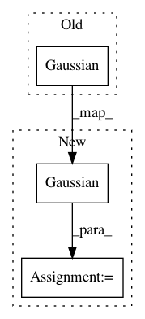

e6ce836b2925a677d0924e8859439937ba5808dc,unsorted_tests/test_multioutput.py,,test_shared_independent_mok,#,274
Before Change
q_sqrt_1 = np.tril(np.random.randn(Data.M * Data.P, Data.M * Data.P))[None, ...] // [1, MP, MP]
kernel_1 = mk.SharedIndependentMok(RBF(Data.D, variance=0.5, lengthscales=1.2), Data.P)
feature_1 = InducingPoints(Data.X[:Data.M, ...].copy())
m1 = SVGP(Data.X, Data.Y, kernel_1, Gaussian(), feature_1, q_mu=q_mu_1, q_sqrt=q_sqrt_1)
m1.set_trainable(False)
m1.q_sqrt.set_trainable(True)
gpflow.training.ScipyOptimizer().minimize(m1, maxiter=Data.MAXITER)
After Change
q_sqrt_1 = np.tril(np.random.randn(Data.M * Data.P, Data.M * Data.P))[None, ...] // [1, MP, MP]
kernel_1 = mk.SharedIndependentMok(RBF(variance=0.5, lengthscales=1.2), Data.P)
feature_1 = InducingPoints(Data.X[:Data.M, ...].copy())
model1 = SVGP(kernel_1, Gaussian(), feature_1, q_mu=q_mu_1, q_sqrt=q_sqrt_1)
def training_loop(model, optimizer, maxiter=Data.MAXITER):
for _ in range(maxiter):
with tf.GradientTape() as tape:
In pattern: SUPERPATTERN
Frequency: 3
Non-data size: 3
Instances
Project Name: GPflow/GPflow
Commit Name: e6ce836b2925a677d0924e8859439937ba5808dc
Time: 2019-03-18
Author: sergio.diaz@prowler.io
File Name: unsorted_tests/test_multioutput.py
Class Name:
Method Name: test_shared_independent_mok
Project Name: SPFlow/SPFlow
Commit Name: e83c4ba2424b141f626e8fc911286b7996649c62
Time: 2018-07-16
Author: stelzner@cs.tu-darmstadt.de
File Name: src/spn/experiments/RandomSPNs/RAT_SPN.py
Class Name: RatSpn
Method Name: get_simple_spn
Project Name: SPFlow/SPFlow
Commit Name: 6bc6978ad31c2adda4540f059340dc61ce4fde3c
Time: 2018-09-11
Author: stelzner@cs.tu-darmstadt.de
File Name: src/spn/experiments/RandomSPNs/RAT_SPN.py
Class Name: RatSpn
Method Name: get_simple_spn